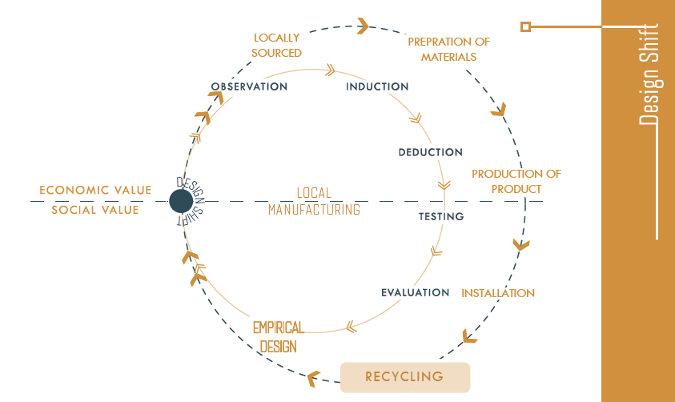

Abstract
Global Climate Crisis and excessive use of natural resources are the biggest challenges that our planet faces today. After the Industrial Revolution and International Design Movement, modernist architects preferred materials such as concrete, steel, and rendered bricks that use large amounts of resources for manufacturing.
Australia uses 1 billion bricks and tiles, and millions of tonnes of concrete a year. These construction materials serve well in durability and aesthetics, but their production contributes to 5-8% of global carbon emissions each year.
SEAtile employs innovative systemic thinking with integration of 3 major sectors - sustainable seaweed farming, construction system and interior architecture through material science using locally sourced renewable resources for a low impact living. The objective is to enhance the environmental performance of conventionally manufactured ceramics with the use of seaweed acting as a biopolymer and reducing the process heat required for production, to a bare minimum.

It's about time we understand the difference between "what we want" and "what we need". DESIGN can help understand human needs and desires in a technologically feasible and environmentally friendly way.
Gathering of raw materials become the starting point in Seatile's life cycle. Seaweed comes from proposed Sustainable Farms of Tasmania. The next stage was the manufacturing system being identified as a huge contributer towards unsustainability. This is where the holistic approach of Seatile comes as change towards closed loop circular system.
Cradle to Cradle principles of design philosophy is followed to increase sustainability assessment of the product.Being made locally with renewable resources makes recycling fairly easy through Technical and Biological metabolisms of the product.
The Design shift towards sustainability needs the present without compromising the ability of future generations. It supports business, innovation and technology by learning from natures ability to redesign existence of life and fulfill human needs while supporting multiple ecosystems to thrive naturally.